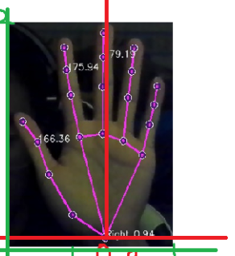
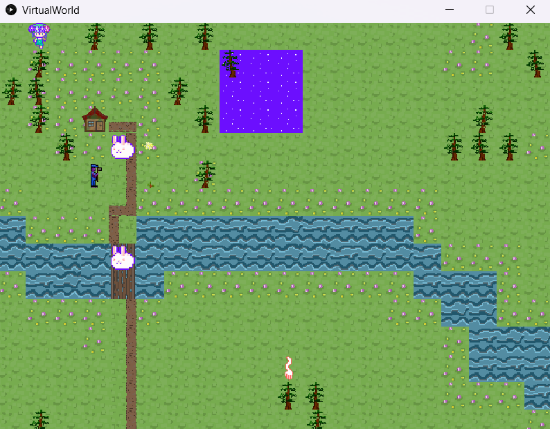

Resume
Download ResumeEducation
Experience
Eagle Scout Service Project Community Garden
Revitalized an underutilized Boys and Girls Club community garden by implementing a comprehensive refurbishment plan
Mobilized and coordinated a team of 12 dedicated volunteers, assigning tasks such as cleaning, topsoil replacement, watering, and
proper plant installation using appropriate equipment and techniques while orchestrating meticulous refurbishment efforts
Demonstrated personal commitment by contributing approximately $500 of personal funds to the project budget, ensuring the
successful execution of the garden refurbishment initiative with responsibility for managing project expenses, safety measures,
logistics, and securing necessary permissions; coordinating efforts between the Boy Scout Troop and the Boys and Girls Club.
Boys and Girls Club
Enabled 50+ children ages 5-13 years old in English, Math, Social Science, and daily homework; improved homework completion.
Co-led various sporting events and hosted tournaments such as flag football, basketball, dodgeball, and other outdoor activities.
Responsible for transportation of sport equipment, snacks, water, safety and well-being of all students involved.
Skills
Programming Languages
-
Java, Python, Scratch, C, Assembly
Technical Skills
-
145 WPM, Canva, Zoom, Microsoft Office (Powerpoint, Excel, Outlook, Word), Google Suite, Slack, Design (Photoshop, Filmora, Adobe Illustrator)
Projects
Hand Landmarks Detection

Using the MediaPipe Hand Landmarker, enabling accurate landmark detection of hands, ensuring robust and efficient performance. Successfully integrated the hand detection device with image data, both as static data and in real-time continuous streams. Utilized image coordinates to design and implement a visual effects rendering system overlaying effects for detected landmarks. Accommodated multiple hand detection and provided accurate handedness identification (left/right hand) for each detected hand.
Object-Oriented Program and Design World

Developed a custom Java class incorporating object-oriented concepts such as type casting, access modifiers, polymorphism, method overloading, single responsibility principle, coupling, cohesion, information hiding, abstract inheritance, and generics. Design an inheritance hierarchy with an abstract superclass and multiple concrete subclasses which incorporates method overriding. Created comprehensive unit tests to achieve full code coverage, ensuring the accuracy and reliability of the class's functionality.
Coursework
California Polytechnic State University, San Luis Obispo
- Date Structures and Algorithms
- Object Oriented Development and Designs
- Computer Organization
- Discrete Structures
- Systems Programing
- Calculus 3
- Physics 2
Awards
- National Qualifier for National Speech and Debate Association, June 2021
- Academic All American, March 2022
- Boy Scout Eagle Rank, May 2022
- Music Teachers’ Association of California Certificate of Merit Advanced Level 10
Interests
Investing, Swimming, Game Development, Duolingo, Leetcode, Codeforces, Video Editing, Running